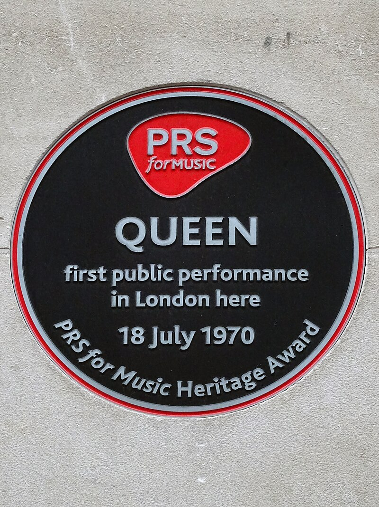

Formação: 1968-71
Em 1968, os amigos de escola Brian May, um guitarrista, e Tim Staffell, baixista e cantor, decidiram formar uma banda e colocaram um anúncio no Imperial College, em Londres, à procura de um baterista ao estilo de Ginger Baker e Mitch Mitchell, e o estudante de odontologia Roger Taylor respondeu, embora seu perfil estivesse mais próximo de Keith Moon. Mesmo assim, o instrumentista impressionou May e Staffell, que o integraram ao conjunto. O trio foi batizado de Smile.
Enquanto frequentava a Ealing Art College, Tim tornou-se amigo de Farrokh Bulsara, que tinha como apelido Freddie. Bulsara sentia que seus gostos eram compatíveis com os da Smile e tornou-se um grande fã da banda, apesar de que a sua vontade de tornar-se o vocalista daquele grupo era cada vez mais crescente. Nesta época, o músico saíra de outros grupos. Em 1969, por exemplo, fundou a Ibex, depois nomeada Wreckage, mas que não durou muito tempo, depois integrando o Sour Milk Sea. Em todos os conjuntos dos quais fazia parte, era exigência cantar blues, todavia as influências do vocalista eram bem mais ecléticas. Ainda em 1969, Bulsara foi apresentado por Tim a Roger e Brian. O estilo glam foi considerado peculiar pelos instrumentistas, e embora o considerassem um pouco afeminado por pintar as unhas, sua personalidade imperativa era tida como cativante. Mais tarde, o cantor estava morando próximo aos dois, fato que fez os demais conhecerem-no melhor, principalmente em relação às suas habilidades de canto e piano.
Em abril de 1970, após Staffell ter deixado o conjunto para se integrar à Humpy Bong, Farrokh foi efetivado como vocalista substituto da Smile. No entanto, incentivou os remanescentes a mudar o nome do grupo para Queen, embora May e Taylor tinham The Rich Kids e The Grand Dance como opções e não tinham muita simpatia em relação à sugestão feita pelo vocalista. Quando questionado a respeito do nome, Bulsara afirmou: "É um nome muito forte, universal e imediato", além de seu teor aristocrático. A ideia do cantor acabou sendo a definitiva.
Como Freddie era pianista, o Queen precisava de um baixista. Roger Taylor sugeriu que fosse Mike Grose, que era ex-integrante da Reaction e, além de ser um bom músico, tinha tocado com a Smile anteriormente. Mike trabalhava num clube chamado PJ em Truro na época em que Roger o convidou para ensaiar com o grupo. Grose mudou-se para Londres com uma van, e após certo tempo foi convidado a se tornar membro. Durante este tempo, o baixista testemunhou muitos atritos entre Taylor e Mercury; segundo ele algo semelhante acontecia anteriormente entre Staffell e o baterista, porém com Freddie as discussões eram mais fortes. Os quatro dividiam um quarto, e duas mulheres moravam ali também. Naqueles dias, os principais temas de debate consistiam na liderança do quarteto, e embora Roger e Freddie fossem mais incisivos neste aspecto, Mercury se sobressaía. No entanto, após dois shows, Mike não fez mais parte da formação. Mesmo acreditando que o Queen tinha potencial para se tornar um sucesso e com o pedido dos demais para que não saísse, o baixista estava cansado e impaciente e decidiu sair.
Após isso, o trio tocou brevemente com um grande número de baixistas, mas nenhum se encaixava com a química do Queen. Um deles foi Barry Mitchell, que, mesmo tendo uma boa relação com os demais integrantes, não se identificava muito com o som do grupo, querendo tocar algo mais melancólico. A namorada de Mercury e amiga de Barry, Mary Austin, tentou convencê-lo a ficar, sem sucesso. Mais tarde, Douglas Bogie, um jovem de 17 anos tentou a vaga, mas sua performance explosiva no palco no primeiro show como membro foi considerada horrível e traumatizante para Freddie. Frustrado, o jovem se demitiu, como forma de esnobar o vocalista. Sua personalidade altiva também era um dos principais empecilhos; o choque de egos era fácil. Para o trio, o ideal era um músico que encaixasse perfeitamente no estereótipo que cerca os baixistas: quieto, reservado e anônimo.
Após audições malsucedidas, Brian e Roger conheceram John Deacon numa discoteca, um instrumentista estudioso que cursava eletrônica no Imperial College. Deacon ficou sabendo que o grupo precisava de um baixista, e por meio de um amigo pôde conhecer os integrantes do Queen. Numa audição, a banda solicitou que John tocasse "Son and Daughter", uma música recentemente criada. A performance perfeccionista do instrumentista surpreendeu a todos, no entanto sua postura foi considerada muito quieta pelos demais colegas. Nesta época, o baixista testemunhava discussões entre os três, e quando era questionado, preferia manter-se quieto, o que, de certa forma neutralizava o choque dos demais.